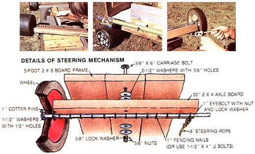

ROBERT W. MATTHEWS
Top left: Greg used fencing nails to fasten the wheel-and-axis units onto his Thunder Racer. Note how he had to slant this car's floorboards in at the front so he could turn its wheels. Top center: The Thunder Racer's brake shoe was made from a real shoe! Top right: Greg put a 1-inch eyebolt near Heavy Hauler's lawn mower wheels to secure his steering rope. Bottom: Details of the go-cart's steering mechanism.